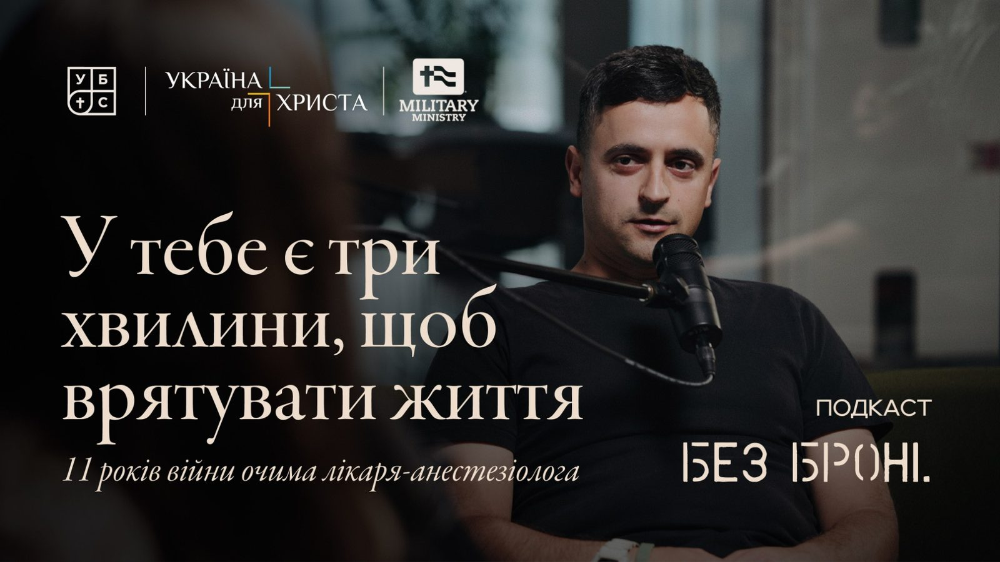

Сезон 1 Епізод 6 · [ЗАПОВНИТИ: дата виходу]
Михайло Тодікаш: «Я не вмію євангелізувати. Я служу практично»

Михайло — військовий лікар-анестезіолог, який служив в армії з 2014 до 2025 року. Зараз працює у військовому госпіталі в Мукачеві й через церкву служить пораненим військовим і ветеранам. Розмова про війну очима лікаря, про межу між професійною відстороненістю і зачерствінням, про євангелізацію особистим прикладом, зустрічі для ветеранів «Живі вогні» і «правило витягнутої руки».
[ЗАПОВНИТИ: вбудований плеєр YouTube/Spotify]
Знайомство
Олександр: Сьогодні ми раді вітати в нас у гостях Михайла Тодікаша. Михайло був військовим лікарем-анестезіологом з 2014 по 2025 рік. Зараз він продовжує працювати лікарем у військовому госпіталі й далі служить пораненим військовим і ветеранам — це вже частина вашого церковного служіння. Усе правильно, Михайле?
Михайло: Так, вітаю вас. Усе правильно сказали.
Олександр: Дуже дякуємо і дуже раді, що ти приїхав до нас із Мукачева на цю розмову. Ми з Надею думали, як почати цей подкаст, і згадали нашу попередню розмову. Коли ми питали, що може бути тригерним, ти сказав, що питання «як ти?» — не найкращий спосіб почати розмову. Тож… як ти?
Михайло: Чудово! У Мукачеві гарна погода, у Львові трошки дощ. Усе добре, слава Богу.
Одинадцять років військової медицини
Олександр: Михайле, одинадцять років ти був саме військовим лікарем — бачив багато, бачив війну. Це довгий період, і коли він починався, ти був ще молодою людиною. Як цей досвід вплинув на твій характер, цінності, на те, якою людиною ти є?
Михайло: Думаю, він на сто відсотків вплинув і залишив свій слід. Думаю, всі ці одинадцять років я був корисним. Від медичного університету і всі ці роки я працював в армії й допомагав пораненим і хворим — як у тихих, спокійних місцях, так і на сході України. Для мене це точно залишило слід. І я думаю, що якусь частку користі приніс нашій державі.
Олександр: А які риси характеру за цей час загострилися, стали виразнішими? Якби ці одинадцять років ти був звичайним анестезіологом у звичайній лікарні — але цей досвід був специфічний. Як він вплинув саме на характер?
Михайло: Посада анестезіолога — і в цивільному житті, і у військовій медицині — дуже впливає і на пацієнта, і на лікаря, залишає слід. Бути в такому стресі всі ці роки… здоров'я мені це точно не додало. Але з іншого боку, для цього мене й вчили стільки років у медичному виші. Тому думаю, що воно того вартувало.
Війна очима лікаря
Олександр: Цікаво, що означає бути військовим лікарем. Як виглядала твоя служба і яку війну ти бачив очима лікаря? Бо досі в нас були ті, хто служив у піхоті, у танкових військах, і в кожного своя призма.
Михайло: Для мене війна в плані військової медицини — це робота з брудними ранами. Рани, у яких і одяг, і бруд, і ми з усім цим працюємо.
Олександр: Тобто ти надавав уже не домедичну, а лікарську допомогу — і поранені все одно потрапляють до вас у такому стані? Я думав, що домедично їх уже хоч якось готують.
Михайло: Якщо поранених більше двох, то за короткий час підготувати їх так, як написано в книжці, неможливо. У реальності ситуація зовсім інакша.
Олександр: Коли ти працюєш із пораненими, ти відчуваєш, що це війна? Чи просто лікуєш пацієнта? Чи викликає це злість до ворогів? Що ти відчуваєш у такий момент?
Михайло: Звісно, ти відчуваєш, що це війна. Ці поранення критично відрізняються від хронічних хвороб чи будь-якої онкології — це ні з чим не порівняти. Вогнепальні поранення зазвичай отримують молоді люди, і працювати ще важче, коли розумієш: перед тобою не пацієнт, який хворіє роками, а свіже поранення, яке дуже швидко забирає життя. Якщо ти не зупиниш кровотечу або не відновиш дихальні шляхи, 22-річний хлопець може загинути за три хвилини. Усе це кардинально відрізняється від цивільної медицини.
Вигорання і межа зачерствіння
Олександр: Але це тебе не зупиняє? За одинадцять років цього всього занадто багато. Важко ж проявляти емпатію, бачачи такий потік людей.
Михайло: За даними європейських колег, вигорання анестезіолога настає через вісім років.
Олександр: Ого.
Михайло: А за даними Михайла… Я знаю своїх колег, усіх старших колег: вони працюють, розуміючи, що це їхній обов'язок, цього їх вчили. Обов'язок перед країною, думаю, теж впливає. Вони професіонали і мусять це виконувати. І я знаю багато колег, які добровільно продовжували свою ротацію на сході. Це нормально в медицині: хтось не хоче їхати, а є лікарі, які залишаються там на довгий період і працюють.
Олександр: А як у тебе з вигоранням? Як ти з цим справлявся?
Михайло: Знаєте, ти просто працюєш, і все. З пораненими в тебе немає умовного контакту. Ти тільки питаєш, чи болить і де болить. Навіть ім'я не питаєш — буває, що немає часу, а буває, що поранених привозять уже без свідомості. Тож ти просто робиш свою роботу й виконуєш обов'язки. Для мене це просто потік.
Олександр: Я пам'ятаю, як мене привезли на стабілізаційний пункт. Мене зашивають, і медик каже: «Ти не проти, я музику увімкну? А то нудно». А я думаю: як це — перед тобою розкрита нога, а ти музичку вмикаєш? Де тоді проходить межа між професійною відстороненістю, коли ти виважено робиш свою роботу, і тим, що ти зачерствів? Бо мені здається, коли бачиш стільки поранених, то черствієш.
Михайло: Так, я теж підтримую цю думку. Думаю, я став злішим. Це вплинуло: я став менш чутливим, можливо, десь суворішим — і до своїх дітей у сім'ї, і на роботі це відбивається. Коли все спокійно, це особливо не проявляється. Але в стресовій ситуації або коли бачу, що щось робиться несправедливо чи неправильно, я одразу реагую. І мені здається, з кожним роком це посилюється.
Олександр: Скільки триває зміна?
Михайло: 24 години.
Олександр: І ти працюєш безперервно?
Михайло: Безперервно. Тобі дзвонять о восьмій ранку: «Треба міняти мене в операційній». Ти заступаєш — і вже сам дзвониш о восьмій ранку наступного дня, що тебе треба міняти. Буває, поки пацієнта готують до операції, є п'ять-десять хвилин — тоді встигаєш перекусити, випити кави.
З ким проговорити цей досвід
Надя: Я хотіла підсвітити інший момент. Саш, пам'ятаєш, коли ми готувалися до розмови, я питала… Михайле, чи є у вас люди, з якими ви можете проговорити цей досвід? Умовно Саша як ветеран може проговорити свій досвід з іншими ветеранами, зокрема християнами. Але досвід лікаря відрізняється від досвіду солдата. Чи є якісь лікарські — християнські чи просто професійні — середовища, де ви можете це проговорювати і де розумієте одне одного?
Михайло: Це госпіталь, у якому я працюю. Усі колеги їздять туди, куди їздив я. Ми постійно на нарадах або при зустрічі згадуємо кожен свою ротацію, розповідаємо випадки, ділимося досвідом: що хто робив у тій чи іншій ситуації. Бо випадки були дуже різні — різні поранення, різні емоційні моменти.
Надя: Але як лікарі ви більше ділитеся медичними речами. А особистими? Не знаю, чи емоції й переживання відходять на другий план. Не врятували людину — і це важко переживати. У людей, які працюють, наприклад, у соціальній сфері, є супервізори: ти приходиш раз на місяць і розповідаєш про свої професійні виклики. Чи є щось таке в лікарів?
Михайло: Ні, у нас такого немає. Думаю, з таким потоком поранених усі розуміють одне одного без слів. Усі знають, що робити, бо війна триває вже багато років. А якщо трапляється щось особливе, то це обговорюється у вузьких колах, і на цьому все. А ветеранам, які не з медицини, напевно, буде нецікаво це слухати.
Надя: Мені страшно це слухати.
Олександр: А коли ти був там і телефонував дружині — про що ви говорили?
Михайло: Ми всі знаємо, що казати дружині: тут усе добре, усе спокійно, я поснідав, я в шапці. Я знаю, що дружина завжди за мене молиться і переживає. Думаю, на неї це вплине негативно, якщо я розповідатиму, що зробив за добу. Немає сенсу — просто щоб не нашкодити.
Олександр: А вдавалося перемикатися від того, що ти бачив, на розмову про цивільне життя — про дітей, про те, що відбувається в житті дружини?
Михайло: Думаю, частково. Я частково можу зрозуміти її переживання, а вона — мої. На якийсь відсоток.
Спочатку лікар, потім військовий
Надя: Михайле, теж важливе питання. Ви одинадцять років в армії. Що для вас означало бути водночас військовим лікарем і християнином? Як це відображалося на вашій службі?
Михайло: Нас завжди вчили: ви ж самі кажете, що спочатку стоїть слово «військовий», а потім «лікар». Хоча я завжди казав, що я передусім лікар, а потім військовий. В армії ти розумієш, що накази бувають різні — медичні чи ні, неважливо, — але їх усе одно треба виконувати. А лікар є лікар. Надати допомогу пацієнтові і не нашкодити — це головне для лікаря. У цьому, думаю, і різниця.
Олександр: А як християнин? Рома — ти його знаєш — розповідав, що на свою першу ротацію в 14-му він приїхав із літературою. Щоб читати самому, а не роздавати — він тоді уточнював, бо я перепитував. А як ти як християнин зайшов?
Михайло: Думаю, найкраща і найефективніша євангелізація — це особистий, практичний приклад того, як ти живеш. Коли ми стояли в Авдіївці, спочатку всі думали, що я хворий. Мало того що я із Західної України, то ще й не п'ю і не курю — це було щось зовсім незрозуміле. Але з часом це дуже швидко минає, коли ти показуєш, що будь-якої миті лишаєшся вірним Богу. Свято чи не свято — ти все одно поводишся правильно.
До речі, в Авдіївці я щонеділі ходив до церкви. Там була дуже гарна церква і гарний пастор Роман. Я брав військовий санітарний автомобіль і їхав на служіння. Коли вперше приїхав, вони дуже злякалися — пастор одразу підійшов: «А ви за ким?» А потім ми після служіння розвозили всіх бабусь додому. Спочатку лякалися сусіди, а потім бабусі вже чекали, коли я приїду.
Олександр: Бабусі знають, як їздити медичними машинами.
Михайло: Знаєте, я така людина, що не дуже вмію євангелізувати. Я більше практик. І вірю, що якась разова акція не діє. Треба довго працювати і просто правильно жити. Людина, яка живе поруч, бачить, що ти ведеш християнський спосіб життя, — і це буде більшою євангелізацією, ніж якщо ти впарюватимеш їй журнали чи щось подібне. Думаю, період, коли збирали стадіони, у християнстві вже минув. Зараз більше працює індивідуальне спілкування і особистий приклад. Люди вже не вірять у гучні промови. Вони аналізують християн — і так перевіряють, чи справді там є Бог.
Олександр: А за одинадцять років люди підходили з особистими запитаннями?
Михайло: Звісно. Навіть на зустрічах для ветеранів, коли сидимо говоримо, люди питають: «А в яку церкву ти ходиш? Якому Богу ти віриш і служиш?» І тоді слово сіється. Зовсім інша розмова, коли ініціатива йде від того, кому це цікаво.
Олександр: Ти служиш у церкві саме ветеранам. А в церквах люди часто кажуть: «Я не знаю, як підійти до військового, що сказати, щоб не образити і не зробити гірше». І через це, навпаки, ще більше відсторонюються. Що б ти цим людям сказав?
Михайло: Я б сказав: просто працюйте на своєму рівні, максимально. Є можливість поговорити — поговоріть. Є можливість допомогти — допоможіть. Можете щось розповісти з власного досвіду чи про когось — зробіть це. Думаю, це важливо і для тієї людини, і для вас. І це стане фундаментом для чогось більшого.
Думаю, найкраща і найефективніша євангелізація — це особистий, практичний приклад того, як ти живеш.
«Тобі що, більше всіх треба?»
Надя: Михайле, Саша зачепив служіння військовим, і я хочу поглибити це питання. У мене в голові формується думка: от ви відслужили — ми називаємо цю цифру, одинадцять років, — свій внесок у країну і війну зробили. Можна дозволити собі абстрагуватися: дружина, діти, зовсім інше служіння. Чому ви далі служите військовим і як саме? Є навіть нахабніше питання: «Тобі що, більше всіх треба?»
Михайло: Думаю, це мій обов'язок як християнина, що живе в час війни. Сидіти вдома й казати «я відслужив», коли війна йде далі, — неправильно. Якщо можеш бути корисним — будь корисним до кінця. Ти не можеш передусім собі довести, що для тебе війна закінчилася. Навіть коли війна закінчиться, ветерани все одно будуть, і з ними треба працювати, їх розуміти. Комусь однозначно треба, бо цей синдром, який є в хлопців, нікуди не дінеться.
«Живі вогні»
Михайло: А яке в мене служіння? Ми організовуємо зустрічі для ветеранів, вони називаються «Живі вогні». Це може бути рибалка, арт-терапія при церкві, якісь виїзди. Проводили таку зустріч і в госпіталі. Дуже класно, коли ветерани можуть із кимось поговорити. У нас є такий момент — «коло роздумів»: розпалюємо багаття, сідаємо всі в коло і ставимо питання. Наприклад: «Як ви спілкуєтеся з цивільними, коли приїжджаєте з війни?» І люди діляться — люди хочуть щось розповісти. Ми питаємо: «Чи потрібні вам ці зустрічі? Чи ми правильно робимо?» І пастор, який із нами, питає: «Як церква може бути корисною для ветеранів?» Так ми отримуємо зворотний зв'язок і намагаємося одразу його застосовувати.
Розповім один приклад. Це була рибалка на озері в горах недалеко від Мукачева. Ми привезли поранених із госпіталю, зокрема на візках. Один поранений вісім місяців не виходив за межі лікувального закладу. А другий був ветеран років 50–55. Він тихенько рибалив усю зустріч, ні з ким не хотів розмовляти — сидів собі з вудочкою, і все. Ми не розуміли, чому він так поводиться. А коли зібрали коло і поставили питання, він просто встав і поділився: тиждень тому він повернувся з полону. Три роки був у полоні. І весь цей час жив думкою, що колись буде на рибалці. Там була така класна атмосфера — він жив заради цієї зустрічі.
Тож, слава Богу, ми допомогли цій людині хоч на якийсь момент психологічно адаптуватися. А другий поранений сказав, що така зустріч замінює рік у психолога чи на лікуванні — стільки позитивних емоцій він отримав. Думаю, це підбадьорює і членів церкви. Ми все фіксуємо на відео, монтуємо і показуємо церкві, що працюємо з ветеранами саме так.
Виклик для пастора
Олександр: Здається, був ще приклад про виклик для пастора щодо спілкування з ветеранами. Хотів би, щоб ти його теж згадав, бо він дуже мотивує. Ви не тільки самі служите, а й закликаєте інших служителів.
Михайло: Однозначно. Я хотів би, щоб церкви долучалися. Знаю, що Ірпінська церква дуже це розвиває — ми навіть дивимося на них і беремо щось для себе. Вони при церкві організовують дуже круті зустрічі й збирають багато ветеранів. І я справді хотів би, щоб наші церкви активніше проводили такі зустрічі в будь-якому форматі й служили всім категоріям людей. Бо під час війни є не тільки ветерани. Є дружини ветеранів, сім'ї, діти. Є вдови загиблих. Є жінки, чиї чоловіки в полоні, — з ними теж треба працювати й піклуватися про них. Є переселенці, які нікуди не поділися. Варіантів дуже багато.
Надя: А «я не знаю, як підійти чи як почати розмову» досі звучить. Можете розповісти свій приклад — як ви показували, як підійти?
Михайло: На одну таку зустріч ми запросили пастора церкви. Це знову була рибалка — рибалило десь двадцятеро людей. Взагалі на такі зустрічі ми збираємо до 50–60 ветеранів, їхні сім'ї, діток. Для дітей окрема програма: підключаються наші сестри, є всякі інтерактиви, розмальовки, іграшкові рибки й вудочки — діти таке люблять.
І я попросив пастора підійти до всіх цих ветеранів — може, хтось захоче з ним поговорити. Коли він обійшов усіх, я підійшов і питаю: «Хтось відморозився? Хтось не захотів говорити?» А він був дуже здивований: усі сто відсотків із ним познайомилися й поговорили, ніхто його нікуди не відправив. Думаю, це дуже класний приклад. Така статистика: саме на таких зустрічах, коли церква робить перший крок, можна поговорити з хлопцями. Навіть просто розмова може змінити настрій, допомогти забутися — і це вже добре. Так прославиться Бог, і так видно, що церква є, вона жива.
А ще ми організували проживання для родичів поранених при нашій церкві. Якщо ветеран лікується в Мукачівському госпіталі, його близькі — дружина, мама — можуть жити при церкві скільки треба, увесь період лікування. У нас є окрема споруда з номерами, і ми приймаємо безкоштовно. Якщо є бажання — запрошуємо на служіння чи поговорити з пастором. І люди звертаються, приходять. Думаю, це теж гарний варіант дотику до військових.
Чому одні церкви служать, а інші ні
Надя: Михайле, цікаво: ваша церква знає, як служити, і бачить потребу, бо в ній люди служать і завдяки вашому досвіду військового лікаря? Бо складається враження, що ваша церква робить багато, а інші не починають такого служіння — просто не бачать і не знають, як почати.
Михайло: Думаю, на якомусь рівні всі церкви щось роблять для військових. Не можу сказати, що ніхто нічого не робить. Ми це робимо, бо в нас є така можливість. У нас є брати, члени церкви, які зараз служать. Кожного з них ми показуємо на екрані й молимося за них, щонеділі згадуємо в молитві. І якщо в них є якась потреба — намагаємося відреагувати. У нас є і фінансова можливість. Можливо, в інших церквах її немає, бо це теж кошти.
Думаю, пріоритет зараз — ветерани і військові. Звісно, є інші потреби, і я не кажу, що не треба піклуватися про малозабезпечені сім'ї чи інші категорії людей — треба на сто відсотків. Але ми живемо в період війни, і це мають розуміти всі — не тільки військові, а й цивільні. Щоб потім, коли діти чи онуки спитають, що вони робили, вони могли дати правильну відповідь.
Правило витягнутої руки
Надя: Ви називаєте це правилом витягнутої руки, так?
Михайло: Так, я десь чув цю фразу і нею керуюся. Правило витягнутої руки — це: зроби те, до чого можеш доторкнутися. Тобто за своєю можливістю: якщо можеш допомогти якимось способом — допоможи, а не жалійся, що держава недобра чи ще хтось недобрий. Усе, що від тебе залежить і до чого ти можеш дотягнутися, — дотягнися і зроби.
Надя: А чи багато людей навколо вас керуються схожим принципом? Чи це тільки вам треба?
Михайло: Ця думка з'явилася нещодавно. У нас була обласна конференція лідерів при церкві, і один пастор сказав: коли ти несеш якесь служіння, настає момент, коли ти питаєш себе: «Це що, тільки мені треба?» І правильна відповідь — так, це тільки тобі треба. Бо кожен зайнятий своєю справою і піклується про неї. А твоя справа — от у мене, наприклад, служіння ветеранам — це тільки тобі й треба, бо ти за нього відповідальний.
Тож коли бачиш, що тебе десь не підтримують, не хочуть іти в команду, не хочуть долучатися, — треба розуміти, що це треба саме тобі. Коли ти це розумієш, стає легше і спокійніше. Ти розумієш, що всі зайняті іншими служіннями і піклуються про своє. І відповідно реагуєш: намагаєшся максимально закрити всі питання сам.
Усе, що від тебе залежить і до чого ти можеш дотягнутися, — дотягнися і зроби.
Що дає силу
Надя: Що після всього пережитого на цьому етапі життя дає вам силу і надію?
Михайло: Силу на сто відсотків дає те, що я можу бути корисним — неважливо, в медицині чи в армії. Коли я розумію, що маю бути корисним на своєму місці, це дає силу. І коли бачу підтримку: є якась добра справа, і люди її підтримують, бо чітко розуміють, для чого вона, — не десь там, а прямо біля них. Тоді це дає силу, і ти хочеш у цьому рости, розширювати цю витягнуту руку. Оце дає сили, натхнення і бажання бути корисним. Думаю, це найважливіше.
Що розповісти онукам
Олександр: Я був у тебе вдома, ти показував свої плани — що хочеш добудовувати, всякі містки. І от через багато років до тебе прийдуть онуки й запитають про цю війну. Що ти хотів би їм розповісти?
Михайло: Думаю, я сказав би їм, без жодних докорів, що допомагав людям. І дав би пораду: не дай Боже, якщо вони колись житимуть у час війни, — щоб були мужніми і корисними.
Думаю, для цивільних це питання актуальніше, ніж для військових. Якщо ти цивільний, у тебе більше запитань, що робити. А в армії чіткі цілі й завдання: ти працюєш, і все. Я відповів би так. Якщо ти був військовим — максимально старайся робити все, щоб війна закінчилася, і не втрать християнського підходу у війні: бути корисним, проявляти любов до ближнього, робити правильні речі. А якщо ти цивільний — будь корисним іншим: переселенцям, тим, хто потребує саме твоєї допомоги. Не когось там, не держави, не мера — а саме тебе. Кому можеш допомогти — допоможи.
З цього все і складається. Це перший пазл — у церкві, у державі, в медицині, в будь-якій команді. Те, що ти можеш зробити, — зроби. І з цього все і почнеться.
Текстова версія відредагована з автотранскрипту: прибрано слова-паразити й повтори, розставлено пунктуацію, репліки розбито за ведучими. Хто з ведучих питає, визначено за змістом (Олександр звертається до гостя на «ти», Надя — на «ви»).
Слухати на платформах
[ЗАПОВНИТИ: посилання на YouTube, Spotify, Apple Podcasts, Telegram — замінити # у кнопках]